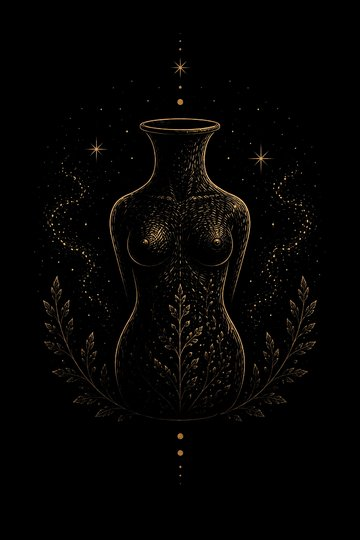
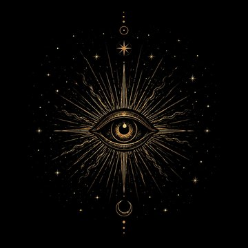
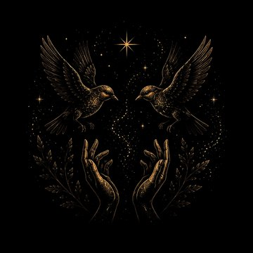
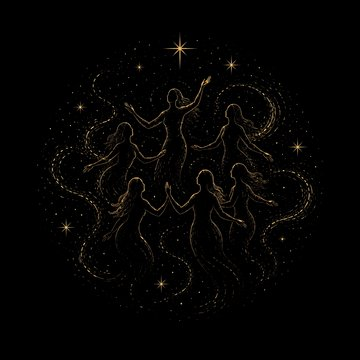

The architecture of a self, unfolding.

The Vessel The Waters
The Waters
The Mystery
Kinship Becoming
Becoming
The Inner ChorusThe six chambers of UNFOLD are grounded in the six clinical domains of EMBARK — the leading transdiagnostic framework for psychedelic-assisted therapy and integration — and expanded through an original integrative approach in which nothing is pathologized and the sacred is taken seriously.
Structured reflection, journaling, contemplative practice, and connection are the mechanisms research points to for carrying the medicine's openings into a life. UNFOLD is those mechanisms, bound in gold and night.
UNFOLD never prescribes. It carries no doses, no schedules, no instructions for any substance — your practice, your rhythm, your words. It is a journal and an educational object, not medical advice.